Plan the access
Describe entrances, stairs and the route to the affected room. Ask how unaffected areas will be protected.
Discuss the detailsFrom flooded lower levels to affected living spaces. Begin with a clearer picture of water extraction.

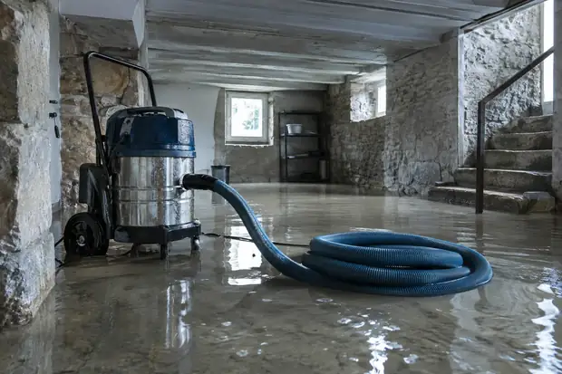
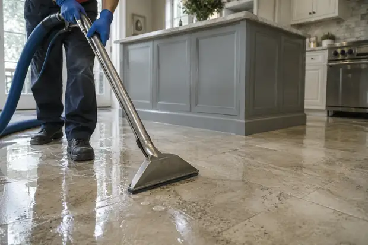
Every extraction enquiry begins with the property.
Describe the affected level, the source if known and the connected rooms. Include entrances, stairs and any limitations on access that may influence the assessment.
Explore the details that help describe your space.
Describe entrances, stairs and the route to the affected room. Ask how unaffected areas will be protected.
Discuss the detailsMention furniture, storage and finishes in contact with water. Clarify what is included in the proposed scope.
Discuss the detailsRequest findings and recommendations in writing. Ask which observations lead to the next stage.
Discuss the details

A better description gives the assessment more context.
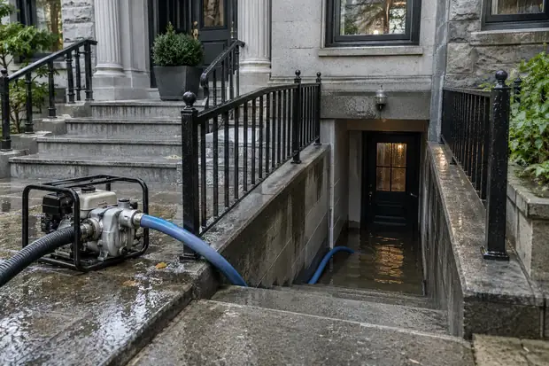
Explain changes in level and how the affected area can be reached.
Discuss this detail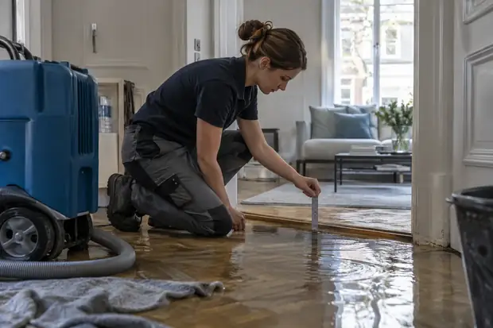
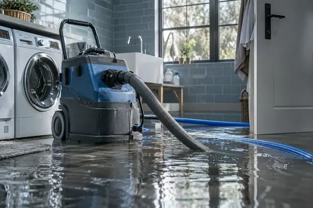
A practical description starts with the setting. Include changes in level, connected rooms and the known point of entry.

Discuss how unaffected rooms and belongings will be considered during the proposed work. Get responsibilities into the written scope.

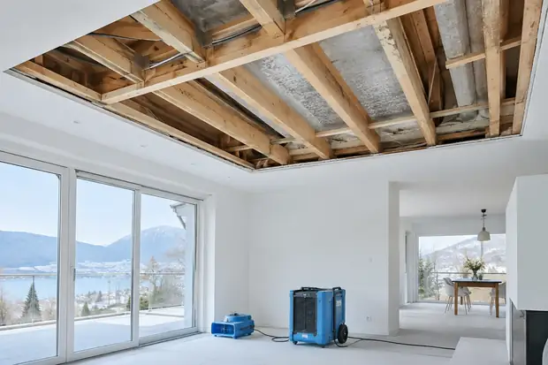
Ask how access routes will be protected.
Clarify what is moved and by whom.
Discuss access with anyone who uses the entrance.
Confirm which observations inform the next stage.
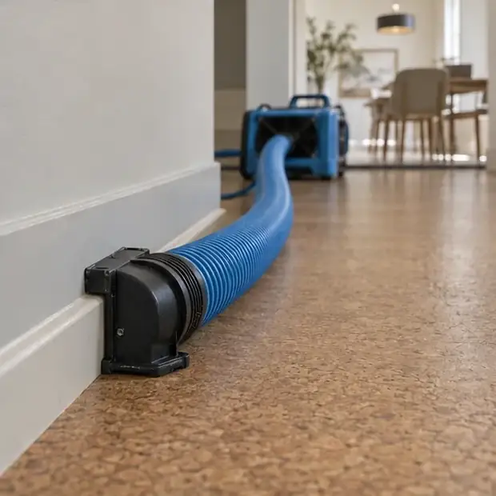
Equipment decisions belong to the property assessment. Explain the layout and ask how the proposed approach suits the room.
Include narrow openings and changes in level.
Describe finishes in contact with the water.
Ask what is checked once visible water is removed.
Ask how the next stage will be assessed.
Ask which materials retain moisture and what further assessment is included.
Clarify any proposed equipment, monitoring and changes to room access.
Discuss what evidence supports the move from drying to repairs and finishes.
Share the room layout and known timing before the visit. Follow the questions that connect extraction with the next assessment. Keep a clear record of what was found and what remains uncertain.
Bring this into your enquiryAsk what removal includes and how the space is protected. Follow the questions that connect extraction with the next assessment. Keep a clear record of what was found and what remains uncertain.
Bring this into your enquiryRequest findings and recommendations for retained moisture. Follow the questions that connect extraction with the next assessment. Keep a clear record of what was found and what remains uncertain.
Bring this into your enquiryA useful quotation describes the work as clearly as the price. Use these points to prepare your next conversation.
Your enquiry checklist
A starting outline is ready. Add these two details to complete your brief.
Equipment, labour, access and the areas covered.
How additional work will be explained and agreed.
What findings and recommendations you will receive.
Bring a little more clarity to the next conversation.
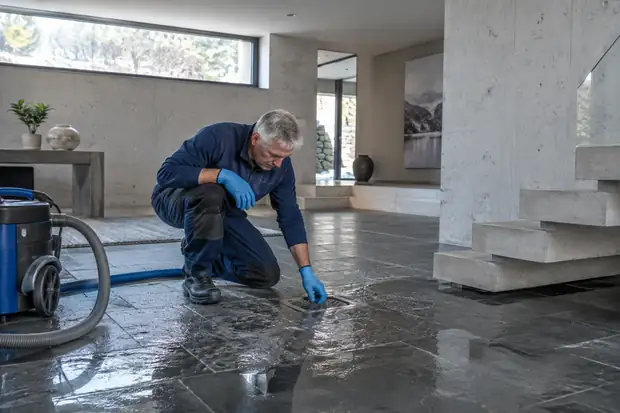
Ask about the assessment of retained moisture, the condition of materials and any further drying or repair that may be needed.
Access, water conditions, the affected area and the agreed scope can all influence a provider’s quotation.
Begin with the affected room or level, the visible extent of water, timing and anything known about the source.
You and your chosen independent provider. Confirm assessment charges, exclusions and the written scope before proceeding.
Tell us about the space. Start a more useful conversation.
Let’s talk about it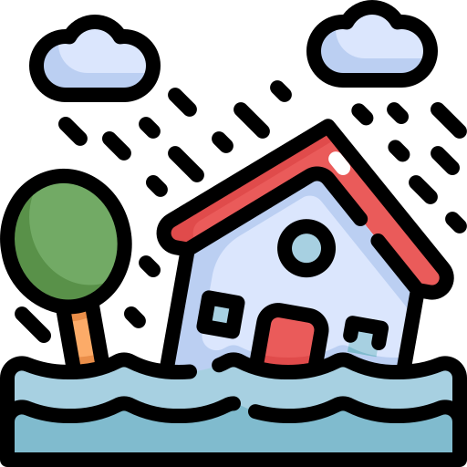
Extract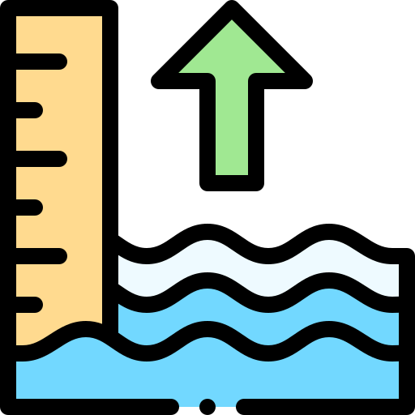
Dry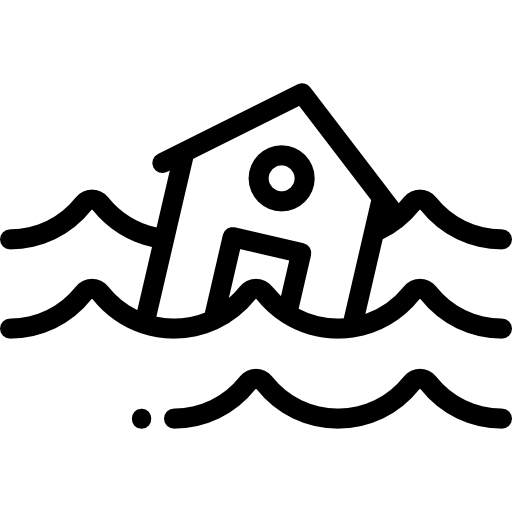
RestoreAssessExtractDryRestoreAssessExtractDryRestoreAssessExtractDryRestore